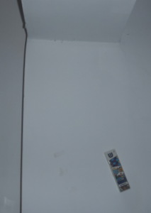

”וּכְתַבְתָּ֛ם עַל־מְזֻז֥וֹת בֵּיתֶ֖ךָ וּבִשְׁעָרֶֽיךָ׃“ (דברים ו:ט)
This פסוק is the source for the מצוה of putting up מזוזות. It appears twice – once in דברים פרק ו; once in פרק יא. Both occurrences are said as part of the daily שמע. And, as it happens, (100% not coincidental) those two paragraphs are also the ones put inside the מזוזה.
The קלף (parchment) with the text of the מזוזה. (Note that the first ה in the name of Hashem here is replaced with a ד.) Image courtesy of beingjewish.com.
In The Sofer Game, you get to pretend to be a סופר and write a מזוזה!
There are 15 mazes, corresponding to the 15 פסוקים on the קלף. To get through each maze, you must pick the correct words at intersections. To pick a word, press the first letter of that word on your keyboard. For example, for the first word, שמע, you'd press ש (a).
The keyboard language can be standard Hebrew or US English. If you need help with the Hebrew keyboard, check out TypeR, a Hebrew typing program i created. Even if you don't need it, please check it out. (And spread the word!). I've provided a mini-keyboard help in the style of TypeR in the game, as well.
Each time you correctly pick a word, you earn 50 points. If you pick the wrong one, you lose 50 points. It's that simple. At the end of the פסוק, you get a hundred-point bonus. If you completed the maze in less than 45 seconds, you get points corresponding to how quick you were. The exact formula is ((45 - time) * 15), which can provide a lot of points, so i recommend trying to be as fast as possible. If that isn't enough bonus points, if you never got a wrong answer, you get another 200!
Well, i won't keep you waiting any longer!
The מצווה of מזוזה is a מצווה דאורייתא (from the Torah). Hashem says to place a reminder of His מצוות on our doorposts. We should have a מזוזה at the door of every room fit for human use (excluding non-walk-in closets and the like), that is not designated for unclean use (which is why we don’t put one by a bathroom). It should be noted that notes to follow are certainly not an exhaustive compilation of the הלכות of מזוזה.
Rooms in both private and communal places require מזוזות. Rooms that are used exclusively for holy purposes (such as the sanctuary in a shul) don’t require a מזוזה. A בית מדרש however, should have one out of ספק. A ברבה is not said. Most shuls nowadays do have מזוזות, because they often incorporate a lobby, social hall, rooms for other purposes, and even offices. Small rooms (less than 16 square אמות) don’t require a מזוזה. Neither do emergency exits. Doors that are rarely used do require one, however, if it doesn’t have the status of emergency exit.
The requirement to put up מזוזות starts at different times in Israel, and out. It also depends on whether you are renting or buying. In Israel, or when buying outside of Israel, you should always put up מזוזות as soon as possible. When renting outside of Israel, you have a 30 day grace period before the requirement sets in, but it’s better to put them up immediately.
What do you do with the מזוזות when moving to a new house? If you know (or expect) that the next tenant or buyer is Jewish, you have to leave מזוזות up. You certainly don’t need to leave expensive cases, though. That’s why, when we bought our house in Israel a couple months ago, it came with cheap מזוזות already up. But since we have our own, we returned them to the sellers. If the next tenant or buyer is not Jewish, or if there is a serious concern that they will be ruined, you don’t need to leave them up.
The מזוזה is placed on the right-hand side of the doorway when entering the room. For most doors, it is placed at the bottom of the upper third. So, for a 9’ doorway, the bottom of the מזוזה is 6’ from the ground. If the doorway is very high, it should be placed around shoulder height of the average man. Remind you of anything from the פסוק we just wrote? How about תפילין, which are placed on the upper arm. As for whether to place it slanted or straight - Ashkenazim place it slanted if there is space (in my house it’s usually a maximum of 35°), while Sephardim always place it straight.
The מזוזה scroll (the קלף) must be written by a סופר סת”ם (ספר תורה, תפילין, מזוזה) who is a ירא שמים and knows all of the complicated הלכות.
“וּכְתַבְתָּם” in this פסוק could be read as one word, meaning “and you will write”, or two words (וכתב תם), meaning “a perfect script”. Each letter is a work of art. Each letter and word must be completely legible. The מזוזה (and תפילין) must be written in order (כסדרן). A sofer is allowed to erase, if he forgets something, but cannot erase the Name of Hashem. A ספר תורה does not need to be written in order, however, which is why, when a sofer came to visit a place where i was, he let people write a letter in their name, out of order.
Many people have a custom to kiss the מזוזה (usually by touching it, then kissing their fingertips) when they pass it. This is a commendable practice, as long as you have the proper frame of mind. You don’t kiss the מזוזה for good luck, or as a charm. It is a reminder and public declaration that Hashem is watching over the house. When touching it, think about the contents, and live a better life!
Don’t be confused by the title – we’re not done writing! 7 more levels. This is about how to roll the scroll before putting it in the case. Fold (more like roll up) the parchment, left to right, so that “שמע”, the first word (on the right before it is rolled), is on the top, with the writing inside. “ש-ד-י”, which is written on the back, should be facing up, and towards the front of the מזוזה case. In other words, if you can see “ש-ד-י” looking at the back, the scroll is in wrong. You can tape it in place if needed.
מזוזות can be put up at any time of day. They cannot be put up on שבת or יום טוב, because of the מלאכה of בונה. Any Jew over Bar/Bat Mitzvah can put up מזוזות. Of course, it is preferable that the בעל הבית do so.
It is very important to use a reputable sofer. As mentioned after level 6, the sofer must be a ירא שמים and know the הלכות. There are certification programs for sofrim, so it’s best to use someone certified. It’s also best to use computer-scanned texts. Humans are susceptible to error, after all, and slight mistakes can be overlooked. Software can ensure that all letters are there and properly formed. It can also detect duplicates, such as if a sofer is photocopying, as it is humanly impossible to write something exactly the same way - dot for dot - multiple times. Sometimes some are almost duplicates, where the sofer adds letters later, which is אסור. No human can remember dot for dot every single klaf presented to them, but computer scanning can.
Hey. I’m a computer programmer. Of course i’ll advocate using computers.
Yes, it is actually possible to turn מזוזות into עבודה זרה. The מזוזה is a reminder that Hashem is watching over us, and that we need to keep His מצוות. The Rambam (Maimonides) says in הלכות עבודה זרה פרק י”א (in the משנה תורה):
ודברים האלו--כולן, דברי שקר וכזב הן; והן שהטעו בהן עובדי עבודה זרה הקדמונים לגויי הארצות, כדי שיינהו אחריהן. ואין ראוי לישראל, שהן חכמים מחוכמים, להימשך בהבלים אלו, ולא להעלות על הלב שיש בהן תעלה
These things [magic and charms] – all of them, are lies and falsehood, and they are what caused the early idol worshipers among the nations to sin. And it is not proper for Israel, who is smart and enlightened, to follow these nothingness, or to even think that they have truth to them. (My own translation)
If we start thinking that the מזוזה is a magic charm, we have a very big problem indeed.
בָּרוּךְ אַתָּה ה‘ אֶ-לֹֹהֵינוּ מֶלֶךְ הָעוֹֹלָם אֲשֶׁר קִדְּשָׁנוּ ְּבְּמִצְוֹֹתָיו וְצִוָּנוּ לִקְבֹֹּעַ מְזוּזָה
Even though it is in the singular (מזוזה as opposed to מזוזות), the same ברכה is said no matter how many מזוזות you are putting up.
No matter how natural it may seem, the מזוזה is not supposed to be horizontally centered in a large doorway. It is permissible, just not the preferred way. Take a look at the entrance to my house:
Courtesy of Aish.com "JEWLARIOUS"
A Chinese businessman operating out of south China suffers a string of robberies. He calls up his associate in Israel and asks him if he ever had a problem with robberies.
"Not really," replies the Israeli. "We have this thing we put on the doorpost called a mezuzah and it protects our homes from harm."
"Send me one," begs the Chinese guy, "I'm desperate for a solution."
A few weeks later, the Israeli gets his mezuzah back in the mail. He calls up his Chinese friend. "Nu," he asks him. "The mezuzah didn't work? You were robbed again?"
"No, no," the Chinese guy assures him, "no robberies."
"So why did you send it back?"
The Chinese guy sighs. "I dunno," he says. "Ever since I hung it up, the doorbell doesn't stop ringing. Each time a different man standing there, saying the same thing: 'Tzedakah please!'"
Also from Aish.com
A couple bought an apartment in Israel from an anti-religious man. In this context, a comment he made was very strange: he assured them that all of the מזוזות were completely kosher. He told them the following story: Many years before, his daughter was born with a serious heart defect. After learning that she didn’t have long to live, he looked everywhere, desperate for a solution. An old Yemenite man advised him to immediately buy and put up מזוזות for his house. He did so, and a miracle occurred - his daughter’s heart defect completely disappeared.
The reason for the man’s advice comes from the פסוק we just read, which talks about long life for one’s children. It comes right after the מצווה of מזוזה.
With this in mind, let’s do the best we can with this מצווה. It’s one we all can do!
I hope you enjoyed playing this game as much as i enjoyed writing it. I hope you also learned something from it.
Now, for credits:
The mitzvah that i chose is mezuzah, and i decided to focus on tzedek or gemilut chassadim (call it what you want). I suggest that in your community, you help out needy families who cannot buy good mezuzot. The sofer's services is often the most expensive part (it should be - you don't really need cases that expensive!), so you can help pay for that.
Good job! If you want to add your score to the database, fill in your name (or nickname). Clicking next will automatically add it.
Warning: This game works best in Firefox or Chrome! If you are using Internet Explorer, it will not work. Note: This is not my fault; it's Microsoft's. They don't follow the standards.